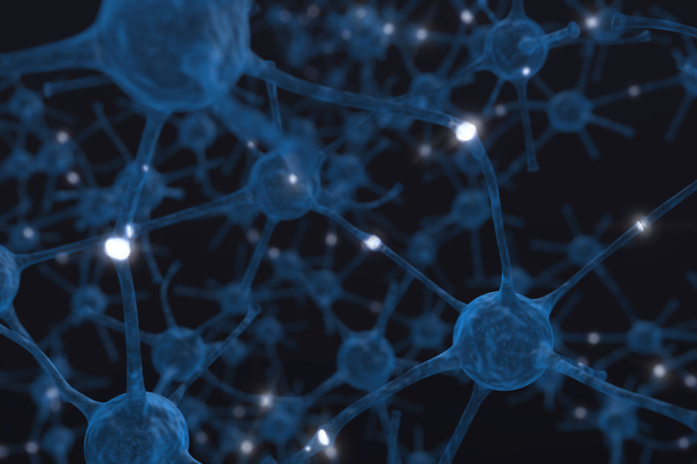

Suplimentace pro zlepšení mozkových funkcí
Tyto byliny či houby napomáhají s kognitivníma funkcema mozku, zlepšením paměti a neuroplasticitou mozku.
Sign up

Tyto byliny či houby napomáhají s kognitivníma funkcema mozku, zlepšením paměti a neuroplasticitou mozku.
Sign upBrahmi podporuje kognitivní funkce, prospívá zdravé paměti, zvyšuje mentální výkonnost. Také obsahuje látky jako flavonoidy, alkaloidy a je bohatá na řadu minerálů.
Gotu kola má neuroprotektivní účinky, zlepšuje výkon paměti, kognitivní funkce a také dokáže snížit markery buněčné smrti.
Ginkgo biloba pomůže s mikrocirkulací krevního systému, s normální činností mozku a v neposlední řadě má příznivý vliv na kognitivní funkce.
Korálovec ježatý je léčivá houba která pomáhá zlepšit paměť, kognitivní funkce, funguje jako prevence Alzheimerovy choroby a posiluje imunitní systém.
“V lidském životě jsou dvě tragédie. První je, že se Vám nepodaří dosáhnout toho co chcete a druhá je, když se Vám to podaří.”